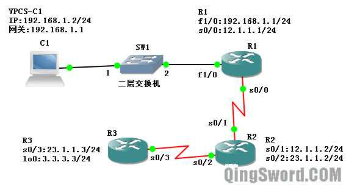

[CCNA图文笔记]-11-Ping、Traceroute应用与排错
引言
这篇文章通过一个实例，演示ping、traceroute、debug等命令的用法；测试网络连通性，分析网络数据不可达的原因。
文章目录
0×1.实例拓扑图与配置
C1是使用VPCS虚拟出来的一台计算机，SW1是一台不可网管交换机（并非IOU中的交换机，GNS3中自带的"Ethernet switch"，拖拽到工作区后会提示选择Server，选择"Local Server"即可），R1、R2、R3上都添加了"NM-4T"串口，R1上还添加了一个"NM-1FE-TX"快速以太网端口。R3上面配置了一个回环接口3.3.3.3/24，各设备IP配置和连接如下图：
VPCS配置如下：
/*配置vpcs的ip子网掩码与网关*/ VPCS> set pcname C1 C1> ip 192.168.1.2 255.255.255.0 192.168.1.1 C1 : 192.168.1.2 255.255.255.0 gateway 192.168.1.1
R1配置如下:
Router>en Router#conf t Router(config)#host R1 R1(config)#line co 0 R1(config-line)#logg syn R1(config-line)#exec-t 0 0 R1(config-line)#exit R1(config)#int fa 1/0 R1(config-if)#ip add 192.168.1.1 255.255.255.0 R1(config-if)#no shut R1(config-if)#int s 0/0 R1(config-if)#ip add 12.1.1.1 255.255.255.0 R1(config-if)#no shut R1(config-if)#end R1#
R2配置如下:
Router>en Router#conf t Router(config)#line co 0 Router(config-line)#logg syn Router(config-line)#exec-t 0 0 Router(config-line)#exit Router(config)#host R2 R2(config)#int s 0/1 R2(config-if)#ip add 12.1.1.2 255.255.255.0 R2(config-if)#no shut R2(config-if)#int s 0/2 R2(config-if)#ip add 23.1.1.2 255.255.255.0 R2(config-if)#no shut R2(config-if)#end R2#
R3配置如下：
Router>en Router#conf t Router(config)#host R3 R3(config)#line co 0 R3(config-line)#logg syn R3(config-line)#exec-t 0 0 R3(config-line)#int s 0/3 R3(config-if)#ip add 23.1.1.3 255.255.255.0 R3(config-if)#no shut R3(config-if)#exit R3(config)#int loopback 0 /*配置回环接口0*/ R3(config-if)#ip add 3.3.3.3 255.255.255.0 R3(config-if)#no shut R3(config-if)#end R3#
0×2.测试连通性
首先在C1上面测试ping自己的网关（R1的fa1/0接口）
/*可以ping通*/ C1> ping 192.168.1.1 192.168.1.1 icmp_seq=1 ttl=255 time=49.000 ms /*继续在C1上测试ping不同网段的地址*/ /*ping网关R1上的串口，成功*/ C1> ping 12.1.1.1 12.1.1.1 icmp_seq=1 ttl=255 time=29.000 ms /*ping R2和R1相连的接口，超时*/ C1> ping 12.1.1.2 12.1.1.2 icmp_seq=1 timeout
这一步为什么会超时呢？是不是数据包没有到达R2？我们在R2上开启debug命令进行调试：
R2#debug ip icmp ICMP packet debugging is on /*开启调试后，再一次用C1去ping 12.1.1.2,发现R2上出现了下面的提示*/ R2# *Mar 1 00:17:10.135: ICMP: echo reply sent, src 12.1.1.2, dst 192.168.1.2 /*关闭所有调试的方法是undebug all*/ /*从上面的显示可以看出R2收到了C1发送过来的ICMP包，我们查看一下R2的路由表*/ R2#show ip route /*主要看下面这一部分*/ Gateway of last resort is not set 23.0.0.0/24 is subnetted, 1 subnets C 23.1.1.0 is directly connected, Serial0/2 12.0.0.0/24 is subnetted, 1 subnets C 12.1.1.0 is directly connected, Serial0/1 /* * 从输出可以明显的看到R2的路由表中有两个直连条目（C） * 发往23.1.1.0/24网段的数据从Serial0/2发出 * 发往12.1.1.0/24网段的数据从Serial0/1发出 * 并没有发往192.168.1.0/24网段的路由条目 */
R2不知道发往192.168.1.0/24网段的数据应该从哪个接口发出，所以R2丢弃192.168.1.2发送过来的数据。
下面给R2添加静态路由，让他知道发往192.168.1.0/24网段的数据应该发给12.1.1.1（R1），之后C1再ping 12.1.1.2，就能ping通了，关于静态路由的知识会在后面的文章中详细介绍，这里有这个概念就可以了：
/*添加静态路由，去往192.168.1.0/24网段的数据发给12.1.1.1*/ R2(config)#ip route 192.168.1.0 255.255.255.0 12.1.1.1
这个时候C1 ping R3的任何地址都是ping不通的，因为数据包到达R1后，R1检查自己的路由表，它会发现没有任何去往R3的路由条目(3.3.3.0/24、23.1.1.0/24)，所以它会直接给C1回复"Destination host unreachable 主机不可达"：
C1> ping 3.3.3.3 *192.168.1.1 icmp_seq=1 ttl=255 time=20.000 ms (ICMP type:3, code:1, Destination host unreachable) C1> ping 23.1.1.2 *192.168.1.1 icmp_seq=1 ttl=255 time=20.000 ms (ICMP type:3, code:1, Destination host unreachable) C1> ping 23.1.1.3 *192.168.1.1 icmp_seq=1 ttl=255 time=26.000 ms (ICMP type:3, code:1, Destination host unreachable) /*在R1上开启ICMP调试，就会看到下面的输出，R1对C1的每一个ICMP报文都回复"目标主机不可达"*/ R1#debug ip icmp *Mar 1 00:34:55.587: ICMP: dst (23.1.1.3) host unreachable sent to 192.168.1.2
要想让这个拓扑图中的每台设备都能互相ping通，需要在R1、R2、R3上面添加下面的静态路由条目：
/*R1添加一条默认路由目的地是12.1.1.2（R2）*/ R1(config)#ip route 0.0.0.0 0.0.0.0 12.1.1.2 /*R2添加下面两条静态路由，分别指向R1的以太网网段以及R3的环回接口网段，告诉路由器去往192.168.1.0/24网段的数据应该发给12.1.1.1，去往3.3.3.0/24的数据应该发给23.1.1.3*/ R2(config)#ip route 192.168.1.0 255.255.255.0 12.1.1.1 R2(config)#ip route 3.3.3.0 255.255.255.0 23.1.1.3 /*R3也添加一条默认路由，目的地是23.1.1.2（R2）*/ R3(config)#ip route 0.0.0.0 0.0.0.0 23.1.1.2
这个时候，不论在哪个设备上，都能ping通拓扑上的所有接口IP；下面是R1上面ping R3回环接口的返回信息：
R1#ping 3.3.3.3 Type escape sequence to abort. Sending 5, 100-byte ICMP Echos to 3.3.3.3, timeout is 2 seconds: !!!!! /* * 这里显示五个感叹号，说明上面默认ping发送5次，ping成功5次 * 如果超时会显示省略号"....." */
关闭R3的回环接口，就会出现超时的情况：
R3#conf t R3(config)#int lo 0 R3(config-if)#shut /*关闭回环接口*/ /*使用R1去ping，显示超时，实际上这里产生了路由环路*/ R1#ping 3.3.3.3 Type escape sequence to abort. Sending 5, 100-byte ICMP Echos to 3.3.3.3, timeout is 2 seconds: . *Mar 1 00:45:09.355: ICMP: time exceeded rcvd from 23.1.1.2. /*对每一个ping，R2都会返回一条信息，意思是TTL=0了，数据包被丢弃，实际上是因为这种静态路由配置出现了路由环路，如果回环口没有关闭，R3将应答这个ICMP，但是此时R3上回环关闭了，R3根据自己的默认路由又将数据发回R2，R2再次将数据发回R3；而这条信息为什么会在R2上呢？这是因为，每个ICMP报文中都有一个TTL字段，这个字段的初始值是32,64,128,256中的一个，而每经过一台路由，这个值自动减一，直到变成0，ICMP包从R1发往R2的时候，初始TTL是一个偶数，通过R2之后变成了奇数，通过R3发回R2的时候又变成了偶数，然后这个数据包在R2和R3之间不停来回发送（因为静态路由表的原因），直到TLL=0，而根据这个数学模型分析，偶数的时候这个数据包是在R2上的，所以R2丢弃这个数据包，并且返回一条信息*/ *Mar 1 00:45:07.991: ICMP: time exceeded (time to live) sent to 12.1.1.1 (dest was 3.3.3.3)
下面我们打开R3的lo0回环接口，关闭R2的s0/2,再次用R1去ping 3.3.3.3：
R3(config)#int lo 0 R3(config-if)#no shut /*关闭R2与R3相连的s0/2接口*/ R2(config-if)#int s 0/2 R2(config-if)#shut /*R1开始ping*/ R1#ping 3.3.3.3 Type escape sequence to abort. Sending 5, 100-byte ICMP Echos to 3.3.3.3, timeout is 2 seconds: U /*(U)代表目的主机不可达*/ *Mar 1 00:53:32.091: ICMP: dst (12.1.1.1) host unreachable rcv from 12.1.1.2 /*R2上的显示如下*/ R2# *Mar 1 00:53:34.823: ICMP: dst (3.3.3.3) host unreachable sent to 12.1.1.1 /* * 查看R2路由表，发现直连接口条目23.1.1.0/24消失了 * 同样，目的地址是这个直连接口网段的静态路由条目也消失了 * 所以R2返回一个消息告诉R1"(3.3.3.3) host unreachable" */ R2#show ip route Gateway of last resort is not set 12.0.0.0/24 is subnetted, 1 subnets C 12.1.1.0 is directly connected, Serial0/1 S 192.168.1.0/24 [1/0] via 12.1.1.1
打开R2的s0/2继续下面的实验。
0×3.高级ping命令和路由追踪命令traceroute
使用高级ping命令，从R1 ping R3的回环接口：
R1#ping /*直接输入ping，回车*/ Protocol [ip]: /*选择协议，默认IP协议回车即可*/ Target IP address: 3.3.3.3 /*选择目标IP，这里是R3的lo0接口IP*/ Repeat count [5]: 10 /*ping次数，本例输入10次，默认5次*/ Datagram size [100]: /*数据包大小，默认回车即可*/ Timeout in seconds [2]: /*超时时间，直接回车*/ Extended commands [n]: y /*是否显示扩展命令，输入y*/ Source address or interface: 192.168.1.1 /*选择用本地的哪个接口去ping，这里选择R1的以太网接口*/ Type of service [0]: /*下面暂时不用理会，一路回车*/ Set DF bit in IP header? [no]: Validate reply data? [no]: Data pattern [0xABCD]: Loose, Strict, Record, Timestamp, Verbose[none]: Sweep range of sizes [n]: Type escape sequence to abort. Sending 10, 100-byte ICMP Echos to 3.3.3.3, timeout is 2 seconds: Packet sent with a source address of 192.168.1.1 !!!!!!!!!! /*可以看到ping通了十次*/ Success rate is 100 percent (10/10), round-trip min/avg/max = 16/40/64 ms /*高级ping命令能同样能实现路由跟踪*/ R1#ping Protocol [ip]: Target IP address: 3.3.3.3 Repeat count [5]: 1 /*Ping一次*/ Datagram size [100]: Timeout in seconds [2]: Extended commands [n]: y /*使用扩展*/ Source address or interface: 192.168.1.1 /*选择源端口*/ Type of service [0]: Set DF bit in IP header? [no]: Validate reply data? [no]: Data pattern [0xABCD]: Loose, Strict, Record, Timestamp, Verbose[none]: r /*这里输入r*/ Number of hops [ 9 ]: Loose, Strict, Record, Timestamp, Verbose[RV]: Sweep range of sizes [n]: /*记录ICMP包从发出到返回所经过的端口（外出方向）*/ Reply to request 0 (96 ms). Received packet has options Total option bytes= 40, padded length=40 Record route: (12.1.1.1) /*首先从R1的这个接口发出*/ (23.1.1.2) /*到达R2，R2从这个接口发出*/ (3.3.3.3) /*到达目的地*/ (23.1.1.3) /*ICMP包开始返回，R3从这个接口发回给R2*/ (12.1.1.2) /*到达R2，R2从这个接口发给R1*/ (192.168.1.1) <*> /*回到起点*/ (0.0.0.0) (0.0.0.0) (0.0.0.0) End of list
ping命令可以测试网络通不通，但是如果中间网络不通，ping不能很好的定位问题出在哪里，而traceroute可以很好的定位问题出现的位置，下面是正常状态下在R1上traceroute 3.3.3.3的结果：
R1#traceroute 3.3.3.3 Type escape sequence to abort. Tracing the route to 3.3.3.3 1 12.1.1.2 40 msec 24 msec 40 msec 2 23.1.1.3 28 msec 48 msec * /* * 可以看到数据首先经过了12.1.1.2，然后到达23.1.1.3 * 3.3.3.3和23.1.1.3同处于R3上，所以追踪到此完成 * 与ping追踪不同的是，traceroute记录的是路由的接收端口，而ping记录的是路由的发出端口 */
Traceroute的工作原理：
首先，发送设备将数据包中的TTL设置成1，数据包会被第一台接收路由器丢弃，返回一个错误码信息，发送设备根据错误码信息判断经过的中间设备和延时，发送设备一般发送三个重复的包（这就是为什么每个IP后面有3个返回时间的原因"12.1.1.2 40 msec 24 msec 40 msec"）；之后发送设备发送TTL为2的数据包，再发送TTL为3的数据包，直到数据包达到目的地或者TTL=30为止；在正常情况下，除非路由存在环路，否则TTL不会超过30就到达目的地；数据到达目的地后，目的设备会返回一个"端口不可达"，发送设备就是利用返回的是错误码，还是端口不可达判断是否到达了目的主机。
0×4.常用排错命令
/*针对某接口，以太网接口可以看到MAC地址，带宽，IP地址等*/ R1#show interfaces fa 1/0 FastEthernet1/0 is up, line protocol is up Hardware is AmdFE, address is cc00.143c.0010 (bia cc00.143c.0010) Internet address is 192.168.1.1/24 /*查看接口是否开启*/ R1#show ip interface brief Interface IP-Address OK? Method Status Protocol Serial0/0 12.1.1.1 YES manual up up Serial0/1 unassigned YES unset administratively down down Serial0/2 unassigned YES unset administratively down down Serial0/3 unassigned YES unset administratively down down FastEthernet1/0 192.168.1.1 YES manual up up /*查看路由器IOS版本，硬件信息等*/ R1#show version /*最后一行会显示配置寄存器的值*/ Configuration register is 0x2102 /*查看路由器接口硬件信息*/ R1#show controllers fa 1/0 /* * 查看路由器接口硬件信息， * 如果是串行接口可以看到如下一行，可以判断接口是DCE端还是DTE端还有时钟 * cable type : V.11 (X.21) DCE cable, received clockrate 2015232 */ R1#show controllers s 1/0 /*查看路由器ARP缓存*/ R1#show arp Protocol Address Age (min) Hardware Addr Type Interface Internet 192.168.1.1 - cc00.143c.0010 ARPA FastEthernet1/0 Internet 192.168.1.2 42 0050.7966.6800 ARPA FastEthernet1/0